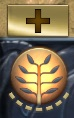

Hotkeys Overview
- Select Group 1: 1
- Select Group 2: 2
- Select Group 3: 3
- Select All Other Units: ~
- Select Courier: F1
- Abilities: Q W E R T
- Abilities (Self): Q W E R T +
Alt - Abilities (Learn): Q W E R T +
Ctrl - Items: A S D Z X C
- Items (Self): A S D Z X C +
Alt - Neutral: V
- Neutral (Self): V +
Alt - Quickbuy: B
- Buy Sticky: N
- Teleport Scroll: G
- Teleport Base: G +
Alt - Open Shop:
Alt + WheelUp - Courier Deliver:
Alt + WheelDown - Courier Burst:
Alt + B - Attack: Spacebar
- Stop or Hold: F
- Directional Move: CapsLock
- Move: F +
Alt - Select Talent Menu: F2
- Select Talent 1: 1
- Select Talent 2: 2
- Chat Wheel: H
- Scoreboard: F5
Alt modifier
Alt is our "self-cast" modifier.
Think of Alt as "to me".
This enables us to quickly and easily cast what we need on ourselves in battle.
Unit Select
We want to group all
In this layout we cluster them around 1
- Select Group 1: 1
- Select Group 2: 2
- Select Group 3: 3
- Select All Other Units: ~
- Select Courier: F1
More on courier usage later.
Abilities
Abilities use the intuitive QWERT layout:
- Abilities: Q W E R T
- Abilities (Self): Q W E R T +
Alt - Abilities (Learn): Q W E R T +
Ctrl
Not everyone knows, but
This is very convenient.
Abilities - Quick Cast
Quick Casts allow us to cast instantly with a key press, eliminating the need for a mouse click.
Everything should be on Quick Casts, with one exception - precise Area of Effect spells.
Notable examples:  ,
,  ,
,  , etc.
, etc.
Because we need to aim these very carefully - it's better to keep them on Normal Cast.

Alternatively, check

This allows us to instantly fire the ability as it is on Quick Cast, but holding down the ability key will not fire it until we release it.
Abilities - Ability 6
Not every hero has
And when they do, sometimes it's important and sometimes not at all.
Y is not a good key for an important ability - it's too far.
So, because we do not have
- Ability 4, 5 or 6: 4
For example, for Invoker I would use 4 for  , which would mean my invoked abilities are R and T.
, which would mean my invoked abilities are R and T.

But for most heroes I use R for
Items
Arguably, instant access to items is more important than instant access to abilities.
That's why we bind items to Quick Cast.
And just like with abilities - we must have instant access to self-cast.
That's why we don't bind items to Alt to begin with.
We also want them to be intuitive and easily accessible.
That's why we bind items right below the ability row.
- Items: A S D Z X C
- Items (Self): A S D Z X C +
Alt
This way, all items are easily accessible, self-cast is easily accessible and the layout is visually coherent with the in-game interface.

You will never misclick anything this way.
Per-Item Overrides
Very few people even aware of this option, but it's the best.

This menu allows us to set Normal Cast per item, overriding Quick Cast slot binds.
Uncheck the following:


Regardless of the inventory slot, these items will use Normal Cast.
This is especially valuable for , because we need to see the visual AOE indicator for their placement and be able to double-tap to switch between them.
Neutral Item
 is the 7th item, so it follows the C to the right.
is the 7th item, so it follows the C to the right.
- Neutral: V
- Neutral (Self): V +
Alt

Easily accessible and (almost) visually coherent.
Teleport Scroll
- Teleport Scroll: G
- Teleport to Base: G +
Alt
Think of G as "Go Ground".
Despite the fact that in the user interface is below , this setup is still very intuitive.

Do not bind as Quick Cast - use Normal Cast.
Quickbuy & Sticky
We use these often, so they should be accessible.
- Quickbuy: B
- Buy Sticky: N
B for
Buy Now.
Shop & Courier
While we are on the topic of items, let's discuss the buying them.
These keys are unusual and should surprise most players.
- Select Courier: F1
- Open Shop:
Alt + WheelUp - Courier Deliver:
Alt + WheelDown - Courier Burst:
Alt + B - Courier Shield:
Alt + N
We do not want to move our hand from the resting position.
That's why
It's very often we need to shop while in action - so we need to do it quickly.
Ideally, without moving our fingers - in case we need to react.
A unique setup, but it's by far the best for ergonomics and speed.
 is easy to reach.
is easy to reach.
Courier maintains its actions on Q W E R T.
Highly recommended to bind
Because R is also much easier to reach.

Attack, Stop
I've been using Spacebar for
- Attack: Spacebar
- Stop or Hold: F
The thumb is usually an underutilized finger, so for such a frequent action as
If you think of S as Stop, think of F as Freeze, Forfeit or F*ck it.
Either way, I promise you will find these extremely comfortable.
Move, Directional Move
 and
and  .
.
It's a weird key; it's not a priority, but 'spikes in value'.
Despite its rare use - we need easy access to it.
CapsLock is a great key for
- Directional Move: CapsLock
 through the jukes), but overall it's the least used action button.
through the jukes), but overall it's the least used action button.
We are using F + Alt because that's what's left and it's somewhat related to movement.
- Move: F +
Alt
We could use the default M, but I find it very awkward to use.
Talents
I found having a hotkey for
- Select Talent Menu: F2
- Select Talent 1: 1
- Select Talent 2: 2
Chat Wheel

This is not for flavor - this is a mandatory bind, and it has to be easily accessible.
Emotional Damage is a real thing, as is Emotional Support.
- Chat Wheel: H
The reason we use Hinstead of, say, F2 is because we still have our wrist and fingers on action buttons for quick reaction.
Chat Wheel Setup
Over a decade I figured this is the required setup to play.

Towards the top we have progressively "aggressive" call-outs.
Towards the bottom we have progressively "defensive" call-outs.
Synergizes perfectly well with every other call-out.
It's the backbone of "DO NOT DO ANYTHING STUPID".
Prepares the team for action.
Reminds them not to dive.
Reminds them not to chase off your own high ground.
It's the best.
,  , etc.
, etc.
Generally useful around objectives, especially high-ground.
When used with
It's also useful when you actually want to group up, i.e. for  or
or 
It serves as "Wait for me" and "I'm not there yet" at the same time.
These are great call-outs, because they lower the chance of our team overextending.
The team needs to know whether or not they can rely on us to make better decisions.
, "They are ganking", "Watch the minimap" and "Careful."
Use with
Camera Grip vs Edge Pan
The answer is - Camera Grip.
Especially so, if your mouse sensitivity is low (<1000).
I personally have Edge Pan Disabled for years.

p.s. the WASD gang I just don't understand, let them be.
Minimap Misclick Protection Time
This one is interesting, because it depends on your skill level.

New players often misclick on the minimap.
This happens to Radiant players intending to walk their hero back to base, but they overshoot the mouse movement and accidentally click on the minimap.
That's exactly what this option is for:
blocking minimap input for a split second to prevent this.
Unfortunately, for more advanced players it makes our experience worse, because the game literally doesn't register the clicks.
Set it to 0.
All options in screenshots